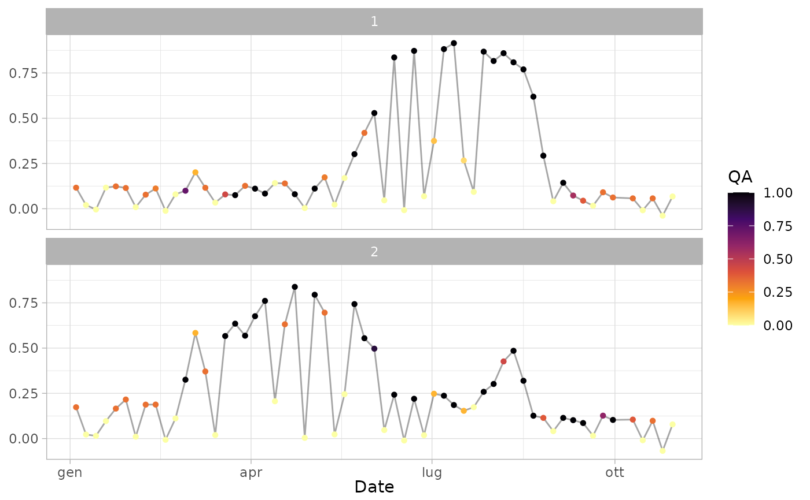

Extract time series from a Sentinel-2 data archive
(created with the package sen2r) over spatial features (points or
polygons). Quality flags can be added exploiting an additional
extracted archive (see arguments scl_paths and cld_paths).
extract_s2ts( in_paths, in_sf, fun = "mean", in_sf_id, scl_paths, cld_paths, scl_w, fun_w = "mean" )
| in_paths | Paths of the |
|---|---|
| in_sf | Object with polygonal or point geometries |
| fun | (optional) aggregation function (or function name)
to be used in case of polygonal
|
| in_sf_id | (optional) character vector corresponding to the name/names
of the |
| scl_paths | (optional) Paths of the SCL files (they must correspond
to |
| cld_paths | (optional) Paths of the CLD files (they must correspond
to |
| scl_w | (optional) weights to be used for each SCL class,
which can be created using function |
| fun_w | (optional) function to be used to aggregate quality flags
in case of polygonal |
The output time series in s2ts format.
To generate pixel weights, SCL and/or CLD layers can be used.
SCL are categorical layers (12 levels), so each level must be converted
in a 0-1 numeric value. This is done by function scl_weights().
If the user provides only scl_paths, the layer of weights will be a
0-1 numeric layer in which each pixel value corresponds to the 0-1 value
associated with the corresponding SCL class.
CLD are integer layers with the percentage (0-100) of cloud probability.
Assumed that a CLD of 0% is associated to a weight of 1 and a CLD of 100%
to a weight of 0, intermediate values are computed taking into account
the output of scl_weights() for classes "cloud_high_probability",
"cloud_medium_probability" and "unclassified"
(this because CLD values are in the range 80-100 when associated to the SCL
class "cloud_high_probability", in the range 20-80 when associated to
"cloud_medium_probability" and in the range 20-80 when associated to
"unclassified" or "thin_cirrus").
The two values "cloud_medium_probability" - "cloud_high_probability"
and "unclassified" - "cloud_medium_probability" are taken as breaks
to reclassify CLD.
I.e., consider the default case:
scl_weights()[c("cloud_high_probability", "cloud_medium_probability", "unclassified")]
returns 0.0 0.1 0.5; so, breaks 0.05 and 0.35 are used, meaning that
CLD values in the range 80-100% are rescaled to 0-0.05,
CLD values in the range 20-80% are rescaled to 0.05-0.35 and
CLD values in the range 80-100% are rescaled to 0.35-1.
If the user provides only cld_paths, the layer of weights will be a
0-1 numeric layer with the above described values.
Finally, if the user provides both scl_paths and cld_paths, the two
layers of weights are combined and the lowest quality flag is considered.
Luigi Ranghetti, PhD (2020) luigi@ranghetti.info
# Load input data data("sampleroi") sen2r_ndvi_paths <- sample_paths("NDVI") sen2r_scl_paths <- sample_paths("SCL") # \donttest{ # Simple TS extraction from polygons (without quality flags) ts_raw_0 <- extract_s2ts(sen2r_ndvi_paths, sampleroi) print(ts_raw_0, topn = 5)#> A raw s2ts time series with 60 dates and 2 IDs. #> Date Orbit Sensor 1 2 #> 1: 2020-01-04 022 2B 1161.33333 1733.06250 #> 2: 2020-01-09 022 2A 201.70833 223.52083 #> 3: 2020-01-14 022 2B -43.72917 150.77083 #> 4: 2020-01-19 022 2A 1163.68750 967.04167 #> 5: 2020-01-24 022 2B 1233.87500 1657.27083 #> --- #> 56: 2020-10-10 022 2B 572.33333 1018.64583 #> 57: 2020-10-15 022 2A -86.37500 -93.22917 #> 58: 2020-10-20 022 2B 571.81250 983.20833 #> 59: 2020-10-25 022 2A -385.56250 -677.97917 #> 60: 2020-10-30 022 2B 676.35417 783.27083# } # TS extraction from polygons using a SCL archive for quality flags # (example used to produce the sample dataset "ts_raw") ts_raw <- extract_s2ts( sen2r_ndvi_paths, sampleroi, scl_paths = sen2r_scl_paths ) ts_raw$value <- ts_raw$value / 1E4 # reshape to standard NDVI range -1 to 1 print(ts_raw, topn = 5) # standard print#> A raw s2ts time series with 60 dates and 2 IDs. #> Date Orbit Sensor 1 2 #> 1: 2020-01-04 022 2B 0.116133333 ○ 0.173306250 ○ #> 2: 2020-01-09 022 2A 0.020170833 ○ 0.022352083 ○ #> 3: 2020-01-14 022 2B -0.004372917 ○ 0.015077083 ○ #> 4: 2020-01-19 022 2A 0.116368750 ○ 0.096704167 ○ #> 5: 2020-01-24 022 2B 0.123387500 ○ 0.165727083 ○ #> --- #> 56: 2020-10-10 022 2B 0.057233333 ○ 0.104959233 ○ #> 57: 2020-10-15 022 2A -0.008637500 ○ -0.009322917 ○ #> 58: 2020-10-20 022 2B 0.057181250 ○ 0.098320833 ○ #> 59: 2020-10-25 022 2A -0.038556250 ○ -0.067797917 ○ #> 60: 2020-10-30 022 2B 0.067635417 ○ 0.078327083 ○ #> #> Quality flags: ● [1] ◕ [0.9,1) ◑ [0.75,0.9) ◔ [0.5,0.75) ○ [0,0.5)#> id date orbit sensor value qa #> 1 1 2020-01-04 022 2B 0.116133333 0.33 #> 2 1 2020-01-09 022 2A 0.020170833 0.00 #> 3 1 2020-01-14 022 2B -0.004372917 0.00 #> 4 1 2020-01-19 022 2A 0.116368750 0.00 #> 5 1 2020-01-24 022 2B 0.123387500 0.33 #> 6 1 2020-01-29 022 2A 0.114379167 0.33# \donttest{ # TS extraction from polygons using a different aggregation function ts_raw_2 <- extract_s2ts(sen2r_ndvi_paths, sampleroi, fun = "max") # TS extraction from points samplepts <- suppressWarnings(sf::st_centroid(sampleroi)) ts_raw_3 <- extract_s2ts(sen2r_ndvi_paths, samplepts) # }